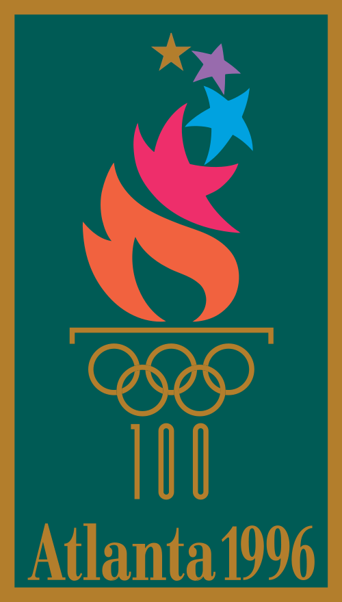
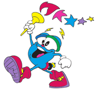

| Home | Video Game | About | Contact |
The 1996 Summer Olympics, officially known as the Games of the XXVI
Olympiad, commonly known as Atlanta 1996, and also referred to as the
Centennial Olympic Games, were an international multi-sport event that
was held from July 19 to August 4, 1996, in Atlanta, Georgia, U.S. These
Games, which were the fourth Summer Olympics to be hosted by the United
States, marked the centennial of the 1896 Summer Olympics in Athens—the
inaugural edition of the modern Olympic Games. They were also the first
since 1924 to be held in a different year from a Winter Olympics, under
a new IOC practice implemented in 1994 to hold the Summer and Winter
Games in alternating, even-numbered years.

More than 10,000 athletes from 197 National Olympic Committees competed
in 26 sports, including the Olympic debuts of beach volleyball, mountain
biking, and softball, as well as the new disciplines of lightweight
rowing and women's football (soccer). 24 countries made their Summer
Olympic debut in Atlanta, including eleven former Soviet republics
participating for the first time as independent nations. The hosting
United States led the medal count with a total of 101 medals, and the
most gold (44) and silver (32) medals out of all countries.

Izzy was the official mascot of the Atlanta 1996 Summer Olympics.
Initially named Whatizit ("What is it?") at its introduction at the
close of the 1992 Summer Olympics in Barcelona, the animated character
with the ability to morph into different forms was a departure from the
Olympic tradition in that it did not represent a nationally-significant
animal or human figure.
The Games turned a profit, helped by record revenue from sponsorship
deals and broadcast rights, and reliance on private funding (as opposed
to the extensive public funding used on later Olympics), among other
factors. The Games faced criticism for being overly commercialized, as
well as other issues noted by European officials, such as the
availability of food and transport. The event had a lasting impact on
the city; Centennial Olympic Park led a revitalization of Atlanta's
downtown area and has served as a symbol of the Games' legacy, the
Olympic Village buildings have since been used as residence housing for
area universities, and the Centennial Olympic Stadium has been
re-developed twice since the Games—first as the baseball park Turner
Field, and then as the college football venue Georgia State Stadium.